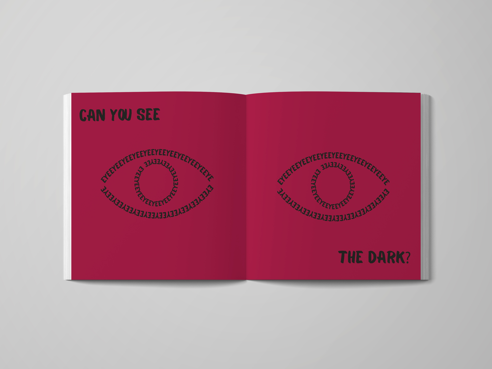
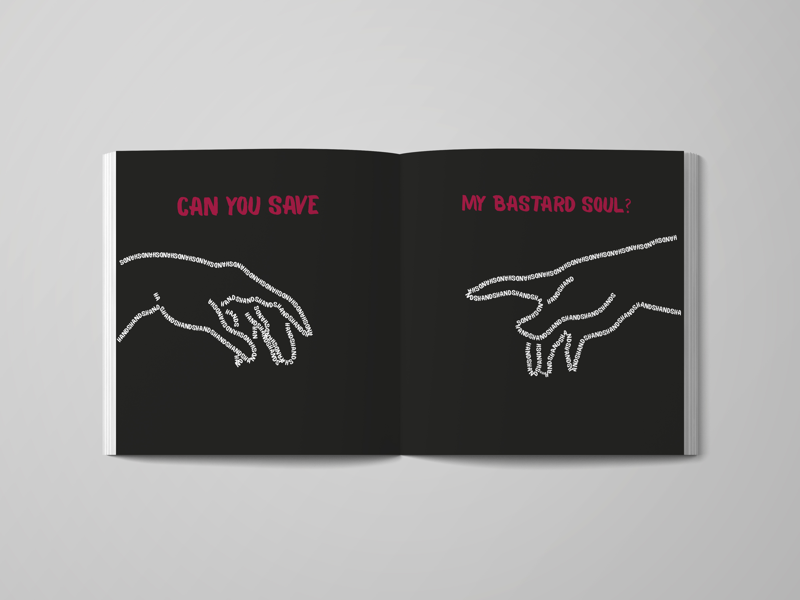

Артбук "Can You Feel My Heart"
Артбук посещен неофициальному гимну группы Bring Me the Horizon. Песня «Can you feel my heart» полностью отражена в данной работе.
Смешение эмо и хард-рока полностью отражается в шрифтовой композиции. Подбор цветов передает атмосферу песни и ее восприятия человеком.
Это сделано для того, чтобы читатель погрузился
в артбук и после чего осознал смысл увиденного. И задумался о своей жизни, чувствах и содеянном перед близкими.

